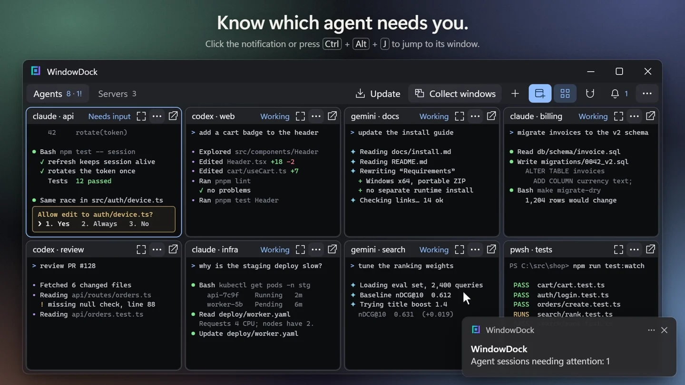

How to group open app windows into tabs on Windows 11
When one task has an editor, a terminal and a browser open, keep them together in a named tab. Each tab in WindowDock can hold several live windows, so you can see related apps side by side and move or minimize them together.

Add the windows you already have open
- Download the Windows x64 ZIP, extract the full archive, and launch
WindowDock.exe. - Use Add windows and select the windows for your first workspace. This works with windows you have already opened.
- Use Collect windows when you want to gather visible desktop windows in one action. When a tab fills up, remaining windows can go into a new tab.
Make a tab for each task
Press the + button to create a tab and give it a task or project name. Use Move to tab from a window’s panel menu to move it to the right workspace.
Use the grid to keep several windows visible. Double-click a panel header to enlarge one window for reading or typing. Drag a panel onto another to swap their positions. Press Ctrl + Alt + K to search by window name.
Clear the desktop when you need it
Minimize WindowDock to get the grouped windows out of the way. The applications keep running. To return a single window to the desktop, choose Undock from its panel menu. Closing WindowDock returns the docked windows to the desktop.
Use a matching privilege level for WindowDock and the app windows you want to dock. If a particular app is difficult to dock, its window can also be linked for quick switching. See compatibility details.
Try it on your next task
Pick the Windows x64 portable ZIP from GitHub Releases. If you use Scoop, you can install it from the project’s bucket.
scoop bucket add poikilometis https://github.com/poikilometis/scoop-bucket
scoop install poikilometis/windowdock